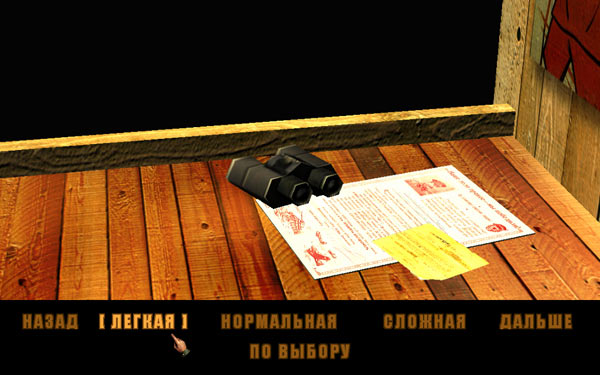
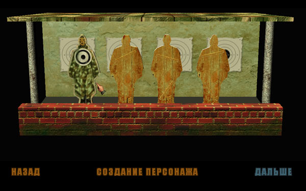

Этот раздел руководства содержит запас самых необходимых сведений, которые нужны для начала игры. Усвоив эти сведения, вы можете продолжать игру без частого обращения к руководству, используя подсказки в игровом интерфейсе. В конце раздела приводятся советы по прохождению первых двух игровых зон. Подробное описание игровых экранов, деталей интерфейса и особенностей игрового процесса можно найти в последующих разделах руководства, которые лучше читать, получив некоторый иг-ровой опыт (как минимум пройдя обучение).
Сюжет и цель игры
В игре «Серп и Молот» вы управляете небольшой боевой группой под командованием советского офицера, которая состоит из бывших профессиональных военных или людей, участвовавших в боевых действиях. События разворачиваются в 1949 году на территории западной оккупационной зоны Германии. По ходу действия вы должны самостоятельно разобраться в ситуации, которая вызвала обеспокоенность вашего руководства, обнаружить противников, постараться раскрыть их замыслы и помешать им причинить ущерб вашей стране... По жанру «Серп и Молот» можно отнести к игре на историческую тему, в которой детективный сюжет сочетается с ролевой игрой и пошаговыми тактическими сражениями.
Вначале ваш главный герой, получив задание Центра и ряд советов, начинает действовать в одиночку. Довольно скоро оказывается, что инструкции Центра не предусмотрели всех вариантов развития событий, свидетелем или прямым участником которых вы становитесь. Кроме того, не на все ваши вопросы Центр сможет дать конкретный и своевременный ответ. В любом случае вашей прямой обязанностью будет, насколько это возможно, поддерживать связь с Центром, докладывать обстановку и получать новые инструкции и задания.
В промежутках между контактами с Центром вам придётся действовать по собственному усмотрению и в соответствии с обстановкой. Ситуация осложняется тем, что вам не всегда будет понятно, кто является вашим явным или потенциальным противником, а также где и в какой момент времени он может вас подстерегать. Для сбора информации вам придётся беседовать с различными людьми, стараясь как минимум не вызвать у них подозрения, а в лучшем случае — заручаться их поддержкой и привлекать на свою сторону. Кого-то из них вы сможете принять в свою группу.
Поскольку некоторые собеседники могут оказаться скрытыми противниками, вам не стоит в первом же разговоре раскрывать своё происхождение и цели вашего пребывания. Кроме того, желательно не вызывать подозрений у местных властей, сотрудников полиции и армии, с которыми, возможно, вам также придётся встречаться.
Учтите, что каждый член вашей группы — личность со своей историей, характером и ценностями. У тех, кто работает на вас за деньги, могут быть совсем другие взгляды, чем у тех, кто пришёл к вам по убеждению или присоединился к группе по приказу своего командира. Некоторые люди могут оказаться несовместимы между собой, что может помешать выполнению ваших задач. Чтобы уменьшить вероятность конфликта, кого-то из группы можно на время оставлять на базе. Ввернувшись на базу, вы сможете снова найти этого человека и включить его в группу — либо когда понадобятся его уникальные способности, либо перед боевым заданием, где каждый боец на счету...
Задания
В игре «Серп и Молот» ваша основная цель — сбор информации и продвижению по сюжету, для чего вам придётся выполнять различные задания. Они могут быть поставлены перед вами в явном виде, как задания Центра или поручения тех людей, на которых вам, в силу складывающихся обстоятельств, приходится работать. Иногда такие задания могут носить криминальный характер, а решать, выполнять их или нет, придётся вам. Выбор этот не всегда прост, поскольку поступая в соответствии с законом, вы можете превратить потенциальных союзников в опасных противников...Некоторые задания вам придётся ставить самостоятельно, сделав логический вывод на основании собранной информации. Иногда информации будет недостаточно, и тогда ваше текущее задание будет состоять в поиске тех людей или мест, где её можно добыть. Учтите, что ваш противник действует по собственному плану, и в некоторых случаях время на поиски и размышления у вас будет ограничено.
Выбор тактики
Сценарий событий, в которых вы участвуете, не задан заранее, он во многом зависит от ваших действий. Часть заданий может быть выполнена различными способами. С тактической точки зрения есть два разных стиля прохождения кампании: решение задач преимущественно вооружённым путём («силовой» стиль) и преимущественно путём переговоров, использования различных хитростей и проведения скрытых операций («дипломатический» стиль).
Силовой стиль требует от персонажей хорошей боевой подготовки и здоровья. Успех операций будет прямо зависеть от численности группы. Помимо трофеев, подобранных на поле боя, старайтесь иметь запас гранат и тяжёлое вооружение, что может стать хорошим аргументом при выяснении отношений с группами противника. Однако в любом случае старайтесь не причинять вред мирным жителям и не вступать в конфликт с силами правопорядка. Для передвижения по территории, находящейся под контролем армии или полиции, постарайтесь найти военную форму одной из западных стран.
Дипломатический стиль требует от главного героя в первую очередь высокого интеллекта. Вам понадобятся убедительная речь (т.е. правильный выбор вариантов ответа), а также набор из гражданской одежды, военной формы и документов, соответствующих ситуации. Главный герой способен успешно выполнить многие задания в одиночку, прибегая к помощи других членов группы, лишь когда требуются их уникальные способности (например, для обезвреживания мин). Однако учтите, что в случае разоблачения героя последствия могут быть самыми неприятными. Кроме того, некоторые задания принципиально можно выполнить только «силовым» способом.
Репутация
Хотя ваши настоящие цели неизвестны представителям власти, они наблюдают за поведением вашей группы и делают выводы, насколько оно приемлемо или враждебно. Исходное отношение к вам нейтральное — например, если вы идёте в гражданской одежде, без оружия и встретите городскую полицию, вас беспокоить не будут. Отрицательно повлиять на вашу репутацию может следующее:
- немотивированная агрессивность в отношении мирных жителей, убийство гражданских лиц (криминальные группы в их число не входят);
- конфликт с представителями власти или оккупационных войск;
- открытое появление в городской местности в форме противника;
- открытое ношение оружия в городской местности без соответствующих документов.
За некоторые нарушения вы можете быть оштрафованы или арестованы. У вас «в запасе» есть возможность совершить несколько ошибок без серьёзных последствий, хотя представители власти и военные перестанут вам помогать. Однако если ошибок будет слишком много, местная власть может решить, что ваша группа заслана противником с диверсионными целями. Последствия такого решения будут соответствующими...
Экономика
В ходе ваших поисков и выполнения заданий вам нужно научиться зарабатывать и тратить деньги по возможности наиболее рационально. Основными источниками средств являются деньги, назначенные за выполнение заданий, и трофеи — оружие и снаряжение противников, которое можно собрать после боя. Деньги и ценные предметы, если вы сумеете их найти, будут хорошим дополнительным источником средств.
При сборе трофеев старайтесь в первую очередь взять наиболее ценные предметы, при этом смотрите на их стоимость (высокую цену и малый вес имеют ювелирные изделия, но найти их удаётся крайне редко). Оружие обычно стоит дороже, чем боеприпасы, — его нужно собирать в первую очередь. Исключение — сильно изношенное и сломанное оружие стоит мало, у некоторых видов оружия заряды могут стоить дороже самого оружия. Часть трофейного оружия и боеприпасов имеет смысл не продавать, а оставить своим персонажам или положить на склад. Чтобы узнать стоимость любого предмета, который есть у персонажа, откройте панель предметов и нажмите клавишу [ Alt ] .
Полученные деньги идут на покупку нового оружия, боеприпасов и снаряжения, на лечение раненых членов группы. В ходе выполнения заданий могут быть другие расходы, и за информацию иногда также приходится платить... Старайтесь избегать полной траты средств, чтобы у главного героя всегда оставалось некоторое количество денег на непредвиденные расходы.
Режимы игры
Игровой процесс может проходить в двух режимах: режиме реального времени и пошаговом (походовом) режиме.
Режим реального времени
Это обычный режим игры, когда ваши персонажи не находятся в прямом контакте с противником, — либо когда на игровой зоне отсутствуют противники и вас окружают только нейтральные персонажи, либо до тех пор, пока противник не заметил ни одного из ваших персонажей. В этом режиме вы можете управлять вашими персонажами без ограничений, персонажи могут действовать одновременно. Игра возвращается в этот режим из пошагового режима, когда бой с противником завершён и все противники уничтожены или остающиеся персонажи противника вас не замечают.
Пошаговый режимЭто режим, в который игра переходит автоматически, если вы начинаете бой с противником или противник заметил кого-либо из ваших персонажей. Пошаговый режим также включается, если вы выполняете действия, способные разрушить другие объекты, — например, стреляете или взрываете что-либо. В пошаговом режиме происходит чередование ваших ходов и ходов противника.
Во время вашего хода игровой процесс приостанавливается (время на принятие решений у вас не ограничено). Вы можете отдавать команды любому своему персонажу или одновременно нескольким персонажам, но объём действий, которые может выполнить персонаж в течение одного хода, ограничен. Тактика ваших действий может быть различной. Обычно она состоит в том, чтобы атаковать обнаруженного вами противника с целью нанести ему наибольший урон и стараться занять своими персонажами позиции, в которых они будут лучше защищены при ответной атаке. Помимо атаки, вы должны заботиться о раненых членах вашей группы, оказывая им своевременную помощь. Если вы по какой-то причине не хотите прямого столкновения, можно попробовать увести ваших персонажей, которые были обнаружены противником, за пределы его поля зрения. После того как запас действий всех ваших персонажей исчерпан, вы передаёте ход противнику, за которого играет искусственный интеллект программы (AI). Нажмите кнопку «Конец хода» в правой нижней части экрана.
В течение хода противника выполнять какие-либо действия, в том числе активно защищать себя, ваши персонажи не могут. В это время противник стремится атаковать своими персонажами членов вашей группы, о которых ему стало известно. Для атаки не обязательно требуется визуальный контакт — и вы, и противник способны обнаруживать цели по шуму и стрелять на слух. Всё время, пока длится ход противника, вы можете только наблюдать за его действиями. Когда запас действий его персонажей исчерпан, ход и управление игрой возвращаются к вам.
Если на игровой зоне присутствуют другие персонажи — например, ваши союзники или нейтральные жители, они тоже получают свой ход — ход дружественной стороны. Возврат из пошагового режима в режим реального времени происходит автоматически после очередного вашего хода. Для этого нужно, чтобы противник перестал вас замечать либо чтобы ваши персонажи прекратили стрелять, взрывать что-либо и т.п.
Действия и здоровье
Чтобы понять принципы управления персонажами в пошаговом режиме, вначале разберёмся в двух текущих параметрах каждого персонажа: это «действия» (Actions) и «здоровье» (Vitality). Оба параметра измеряются в относительных единицах (points — очки, пункты), поэтому в игре их чаще называют «единицы действия» (Action Points, сокращённо AP) и «единицы здоровья» (Vitality Points, сокращённо VP).
Действия (AP)
Этот параметр определяет объём различных действий, которые может выполнить персонаж в течение одного хода в пошаговом режиме игры, его можно сравнить с мастерством персонажа. Каждое действие требует затрат определённого количества AP — чем сложнее действие, тем больше AP необходимо затратить на его выполнение. Например, передвижение ползком требует существенно большего расхода AP, чем бег на то же расстояние, а выстрел из пистолета «оценивается» во много раз меньше, чем выстрел из гранатомёта. Смена позы, перезарядка и разблокировка оружия, подбор предметов, перекладывание предметов из сумок в руки и обратно — всё это требует определённых затрат действий. В начале каждого хода значение AP у персонажа максимально. В процессе выполнения каких-либо действий текущая величина AP уменьшается. Максимальное значение AP можно посмотреть в окне параметров персонажа, текущая величина выводится крупными цифрами справа от портрета персонажа на игровой панели и на закладке с его именем.
Потратив значительную часть AP, персонаж не сможет в текущем ходу выполнять сложные действия, а при AP=0 он не может двигаться дальше и должен ждать начала следующего хода. Поскольку AP расходуется необратимо, важно учесть, сколько потребует выполнение того или иного действия. Эта информация выводится рядом с курсором или в контекстной подсказке к кнопке управления на игровой панели. Некоторые действия требуют фиксированного расхода AP — например, поворот на месте в указанную сторону выполняется за 2 AP, перекладывание предмета из «рюкзака» в пустые руки — 4 AP, а выбрасывание предмета на землю AP не требует. Затраты AP для движения к определённой точке на местности можно прочитать в круге, который находится в конце проложенного пути. Цвет точек, отмечающих путь, даёт дополнительную информацию: зелёный указывает на небольшой расход AP, жёлтый — на снижение AP, которое ограничит способность атаки текущим оружием или сделает её невозможной, красный отмечает часть пути, куда персонаж не сможет добраться за текущий ход. Обратите внимание, что в пошаговом режиме все действия, выполняемые по однократному нажатию кнопки мыши (например, стрельба) имеют курсор с информацией о величине AP, а команда «движение» выполняется по двойному щелчку.
Перед тем как отдать персонажу команду выполнить то или иное действие, подумайте, как распределить его AP по возможности лучшим образом. Например, для лежащего персонажа, который должен добраться до каменной стенки на расстоянии 5 м, чтобы укрыться от огня противника, расход AP по команде «ползти» может быть намного больше, чем при выполнении последовательности команд «встать», «бежать» и «лечь». Правда, во время бега вашего персонажа может перехватить противник... Другой пример: один снайперский выстрел из винтовки на большое расстояние может быть гораздо эффективнее стрельбы из револьвера — его пули могут пролететь мимо цели или просто не долететь до неё. Но на расстоянии 1-2 м револьверная стрельба, требующая малых затрат AP на выстрел, нанесёт противнику гораздо больший урон, чем одиночный винтовочный выстрел.
Когда все ваши персонажи выполнили запланированные действия или их AP стали близкими к нулю, вы должны передать ход противнику. После окончания его хода ваши персонажи восстанавливают исходные значения AP (величины AP у раненых или перегруженных персонажей могут быть ниже максимальных). Вы можете поставить персонажам новые задачи или дать команду продолжить те действия, которые не были завершены на предыдущем ходу из-за нехватки AP.
Максимальное значение AP персонажа может уменьшаться при критических ранениях, при перегрузке, а также как побочный эффект после приёма некоторых медикаментов.
Здоровье (VP)
Этот параметр определяет текущее состояние здоровья персонажа. Чем больше величина здоровья, тем больше урона может выдержать персонаж. После получения ранений персонаж начинает действовать менее эффективно. Наиболее частая причина уменьшения VP — огнестрельные ранения пулями или осколками. Другими причинами могут быть действие взрывной волны, ранение холодным оружием и падение с высоты (например, при обрушении строения). Текущее состояние здоровья каждого вашего персонажа отображается цветной полосой на закладке с его именем на игровой панели, а также выводится в подсказке при наведении курсора на фигуру персонажа.
При значительном уменьшении общего уровня VP или при кровотечениях персонаж начинает терять здоровье на каждом ходу. Когда VP снизится до 0, персонаж переходит в бессознательное состояние. После выхода из зоны на «нормальном» и «сложном» уровнях потерявшего сознание члена группы нужно вынести из текущей зоны, иначе он останется без помощи и погибнет. Персонаж также может погибнуть, получив урон, многократно превышающий его VP (или при снижении VP ниже 0 на «сложном» уровне). Гибель или бессознательное состояние главного героя приводит к концу игры.
Некоторые ранения, помимо общего уменьшения здоровья, могут ухудшать те или иные способности персонажа. Такие поражения считаются критическими и отображаются специальными иконками рядом с портретом персонажа. Например, при ранении в руку персонаж может потерять способность держать в руках оружие, при ранении в ногу — передвигаться, поражение головы может привести к потере зрения или слуха, а ударная волна от взрыва — оглушить персонажа и лишить его способности к любым действиям. Критические поражения могут быть временными и постоянными (иконки синего и красного цвета). Временные поражения через определённое число ходов проходят; постоянные требуют медицинского вмешательства, некоторые из них лечатся только после выхода из зоны или врачом на базе.
В боевой обстановке раненому персонажу можно оказать первую помощь, которая заключается в лечении критических поражений, остановке кровотечений и перевязке ран. Определёнными медицинскими способностями обладает каждый член группы, в наибольшей степени ими владеет медик. «Перевязанные» ранения отображаются в полосе здоровья персонажа розовым цветом. После перевязки способности персонажа к действиям восстанавливаются. Также можно лечить критические поражения, медицинские инструменты делают этот процесс более эффективным (лечение временных поражений также имеет смысл, т.к. ускоряет выздоровление персонажа). Чем выше медицинская квалификация персонажа, тем более сложными инструментами он может владеть и тем более серьёзные поражения может вылечить на месте. Процесс перевязки занимает много времени, поэтому, если у вас есть несколько раненых, которым необходима медицинская помощь, постарайтесь побыстрее покинуть зону, чтобы вылечить их.
Вероятность попадания и урон
При атаке существует определённый шанс, что выпущенная пуля попадёт в противника, граната долетит до того места, на котором стоит персонаж, а удар холодным оружием не пройдёт мимо цели. Это зависит от многих факторов, например, для огнестрельного оружия — от его параметров (дальность и кучность стрельбы), от положения стреляющего (стрельба лёжа более эффективна, чем стрельба стоя), от выбранного режима стрельбы (стрельба навскидку менее точна, чем при тщательном прицеливании), от пристрелки (последующие выстрелы точнее предыдущих), от навыка стрельбы вообще и от привычки к конкретному типу оружия в частности, от движения цели (в стоящего противника попасть проще, чем в бегущего), от видимости цели (наиболее эффективна стрельба по цели, которую стреляющий видит, стрельба на слух менее эффективна), от времени суток (в ночное время попасть сложнее), от наличия и вида препятствий (стрельба через оконное стекло более эффективна, чем через деревянную стену), от состояния стреляющего (раненый стреляет хуже, чем здоровый) и т.д. В сумме все эти факторы дают средний шанс успешной атаки — это и есть вероятность попадания в цель.
При наведении на цель шанс попадания для текущего оружия выводится рядом с курсором (число со знаком «%»). Чем выше это число, тем больше шансов, что противнику будет нанесён урон. Если вероятность попадания слишком мала (5% и менее), то это скорее всего говорит о том, что расстояние до противника превышает дальность прицельной стрельбы текущего оружия. Попробуйте сменить оружие на другое (сравните дальность по контекстной подсказке). При вероятности попадания, равной 0, атака не имеет смысла — между вами и противником находится непробиваемая преграда или вы стоите слишком близко. Попробуйте сдвинуть вашего персонажа в сторону, чтобы исключить препятствие для атаки.
Вероятность попадания порядка 90% и выше говорит о хороших шансах поразить цель. Но часто это достигается ценой слишком больших затрат AP. Как следствие — уменьшается число возможных атак противника (число выстрелов) за один ход. Учтите, что одно попадание не даёт гарантии вывода противника из строя: во многих случаях требуется несколько успешных выстрелов — перерасход AP лишит вас такой возможности в текущем ходе, а при ходе противника вероятность попадания может сработать в его пользу...
Чтобы выбрать оружие и предпочтительный режим стрельбы, сравните вероятность попадания в разных режимах и число выстрелов, которое может сделать ваш персонаж. Например, лучше сделать 4 выстрела с 40-процентной вероятностью попадания, чем один со 100-процентной, тем более, что при нескольких выстрелах следующие оказываются точнее. По этой же причине стрельба очередью может быть достаточно эффективной даже при невысокой вероятности одиночного попадания.
При успешном попадании в персонажа его здоровье уменьшается на величину урона, она отображается «отлетающими» красными цифрами. На величину урона влияет много факторов, основные из них — это параметры оружия, включая тип боеприпасов, и ослабление удара за счёт преград. Преграды (стены строений, местные предметы, броня) отнимают часть урона, который могла нанести пуля или снаряд, а при достаточной толщине полностью защищают персонажа. Параметры оружия, в том числе урон и пробивную способность (бронепробиваемость), можно посмотреть в контекстной подсказке к оружию. При прочих равных условиях больший урон здоровью причиняет попадание в «чувствительные» части тела, в первую очередь в голову. Удар холодным оружием со спины также увеличивает значение наносимого урона. Совет: для уменьшения урона, который наносит противник вашим персонажам, старайтесь использовать укрытия и преграды или принимайте позы, в которых уменьшается вероятность попадания, — в стоящего человека проще попасть, чем, например, в сидящего.
Перехват
В пошаговом режиме строгое чередование ходов (ваш ход — ход противника — ваш ход...) иногда может нарушаться. Это случается, когда одна из сторон внезапно обнаруживает персонажа другой стороны, о существовании которого раньше не было известно: либо персонаж первым заметил противника во время его хода, либо противник, заметив персонажа первым, сделал выстрел и промахнулся. При этом происходит внеочередная передача хода другой стороне — перехват хода. Перехват повышает динамичность действий и делает бой менее предсказуемым.
Основное условие перехвата: у того персонажа, который перехватил ход, должно оставаться некоторое количество неизрасходованных AP от последнего хода. Действовать во время перехвата может только этот персонаж, управление другим персонажам не передаётся. Персонаж, перехвативший ход, имеет шанс первым нанести удар противнику. После этого ход возвращается обратно и завершается как обычно.
Например, ваш персонаж стоит за углом дома. Сейчас ход противника, его персонаж выходит из-за угла, и вы замечаете его первым. Происходит перехват, и ход переходит к вам. Вы можете атаковать противника, если имеете достаточное количество неизрасходованных AP. Если противник в свой ход заметил вас первым, перехвата не происходит. Но он может произойти, если противник выстрелит и промахнётся. Когда за углом стоит персонаж противника, а вы идёте мимо, ситуация повторяется с точностью до наоборот. Совет: иногда бывает полезно оставить в конце хода некоторое количество AP на случай перехвата.
Ресурс оружия, его отказы и ремонт
Любое огнестрельное оружие при использовании изнашивается, при этом могут происходить сбои стрельбы и поломки. Для оценки состояния оружия используется понятие «ресурс». Любой экземпляр оружия имеет два параметра — максимальный ресурс и текущий ресурс, для нового оружия эти значения совпадают. Каждый выстрел приводит к уменьшению текущего ресурса на величину, которая зависит от вида боеприпаса. Когда текущий ресурс становится близким к нулю, оружие ломается и больше не может стрелять. Сломанное оружие можно починить, ремонт восстанавливает его работоспособность, но приводит к снижению максимального ресурса.
Отказы оружия бывают 3 видов:
- Осечка — отсутствие выстрела, вызванное плохим боеприпасом. AP расходуется, как при обычном выстреле. Если велась стрельба очередью, она останавливается, поскольку нарушается работа автоматики. Какие-либо специальные действия при осечке не нужны, но на следующий выстрел требуются затраты AP, как при первом выстреле.
- Заклинивание затвора не даёт возможности извлечь гильзу обычным способом, стрельба прекращается. Заклиненное оружие выделяется синим цветом. Требуется специальное действие персонажа по разблокировке, которое требует затрат AP и уменьшает максимальный ресурс оружия. Вероятность заклинивания растёт по мере уменьшения текущего ресурса.
- Поломка оружия может произойти в любой момент, стрельба прекращается. Сломанное оружие выделяется красным цветом, восстановить его работоспособность без специальных инструментов невозможно. Вероятность случайной поломки растёт по мере уменьшения текущего ресурса.
Ремонт оружия может выполнить персонаж, имеющий инженерную квалификацию, или инженер, с помощью специального инструмента; при этом снижается максимальный ресурс. Чем выше инженерная квалификация, тем меньше снизится ресурс оружия после починки. По этой же причине разблокировку оружия тоже лучше поручить инженеру, если есть такая возможность. Чтобы иметь оружие с высоким ресурсом (что очень важно в бою), нужно внимательно просматривать собранные трофеи.
Несколько полезных советов
- Старайтесь найти всех персонажей, с которыми можно поговорить (обращайте внимание на курсор при наведении на персонажа и имя в подсказке). Иногда с персонажами можно поговорить несколько раз на разные темы, кроме того, со временем у них может появляться новая информация. К некоторым персонажам можно обратиться не только главным героем.
- При наличии нескольких вариантов ответа в ходе диалога старайтесь выбрать лучший вариант для данной ситуации: ваши дипломатические способности могут сильно облегчить выполнение заданий.
- Следите за боекомплектом у членов группы: своевременно перезаряжайте оружие, в промежутках между боями осматривайте оружие и снаряжайте магазины.
- Перед выходом из игровой зоны собирайте ценные предметы, которые можете унести с собой. Проверяйте содержимое ящиков и сейфов: в них могут оказаться полезные вещи и даже документы с ценными сведениями!
- Не торопитесь стрелять по слышимой, но не видимой фигуре: это может быть нейтральный персонаж или ваш потенциальный союзник.
- Периодически связывайтесь с Центром, чтобы доложить ситуацию и получить новые инструкции.
Вы познакомились с основными принципами игры «Серп и Молот». Теперь самое время запустить игру, чтобы применить полученные сведения на практике. Желаем удачи!
Главное меню
Запустив игру и посмотрев вступительные ролики, вы увидите экран главного меню:

Обучение
Пункт «Обучение» открывает вход на специальную зону, обучающую основам игрового интерфейса, — управлению камерой, управлению персонажем, использованию игровой панели. В процессе обучения вы будете получать учебные задания вместе с необходимыми объяснениями и подсказками. Вы также можете делать записи игры и при необходимости загружать их. Успешно завершив обучение (возможно, это потребует некоторого времени), вы будете гораздо увереннее чувствовать себя, выполняя реальные задания. Настоятельно советуем пройти обучение перед началом кампании!
Кампания
После выбора этого пункта вы начинаете новую сюжетную игру.
Модификации
Этот пункт даёт возможность загрузить игровые модификации (моды), которые могут содержать как изменения в правилах сюжетной игры, так и отдельные игровые зоны.
Экран модификаций разделён на две части. В правой части выводится окно со списком доступных модификаций, которые можно подключить к игре, в левой части выводится список модификаций, выбранных для подключения. Название модификации считывается из файла description.txt, который должен входить в комплект каждой модификации. Пункт «Применить» позволяет подключить к игре выбранные модификации, пункт «Назад» служит для возврата в главное меню. Более подробно о содержании той или иной модификации, её подключении и особенностях игры смотрите в прилагаемой к ней документации.
Загрузка
В процессе игры вы можете делать записи (обычное и «быстрое» сохранение); сразу после входа на очередную зону и при выходе из неё запись делается автоматически. Этот пункт даёт вам доступ к экрану со списком сделанных записей, где вы можете выбрать любую из них.
Настройки
Выбрав этот пункт, вы можете изменить настройки графической системы (они существенно влияют на быстродействие и качество изображения), звуковые и игровые настройки. Подробнее смотрите в разделе, посвящённом интерфейсу игры.
Авторы
Информация об авторах игры (см. раздел «Авторы»).
Лучшие результаты
Выбрав этот пункт, вы увидите экран результатов. Новая запись появляется здесь всякий раз, когда вы успешно завершаете кампанию. Набранное число очков зависит как от боевых успехов в ходе кампании, так и от выбранного уровня сложности игры. Чтобы вернуться в главное меню, нажмите [ Esc ] или щёлкните по кресту в правом верхнем углу экрана.
Выход
Выход из игры в Windows.
Итак, вы прошли начальное обучение и готовы перейти к сюжетной игре. Выберите в главном меню пункт «Кампания».
Выбор уровня сложности

Для выбора уровня сложности нужно воспользоваться пунктами меню, которые находятся в нижней части экрана, выбранный пункт выделяется более ярким цветом и квадратными скобками. Пункты «Назад» и «Дальше» служат для возврата в главное меню или перехода в экран выбора героя, соответственно.
Вам необходимо выбрать уровень сложности игры. Сложность выбирается один раз на всю кампанию (чтобы изменить сложность, вам нужно будет начать новую игру).
Лёгкая
На лёгком уровне вы сможете сохранять игру в любой момент времени. Если один из ваших персонажей (за исключением главного героя) от полученных ранений потерял сознание, он сможет находиться в таком состоянии достаточно долго и скорее всего выживет без медицинской помощи. После выхода из зоны такой персонаж покинет игровую зону автоматически. При переходе из одной зоны в другую основная часть ранений, полученных персонажами, излечивается автоматически.
Нормальная
На нормальном уровне вы сможете сохранять игру только в те моменты, когда она находится в режиме реального времени, т.е. вне боя с противником. Персонажей, потерявших сознание, при выходе из зоны нужно выносить на руках, иначе они погибнут. При переходе между зонами все ранения, полученные персонажами, перевязываются, и небольшая их часть излечивается.
Сложная
На сложном уровне вы сможете сохранять игру только в те моменты, когда ваша группа вышла на уровень карты региона. Персонажи, потерявшие сознание, не могут длительное время оставаться на игровой зоне, иначе они погибнут. Их нужно выносить из зоны на руках. При переходе между зонами все ранения, полученные персонажами, перевязываются в соответствии с квалификацией персонажа, имеющего максимальный навык медика, но для полного излечения необходимо обратиться к врачу на базе.
По выбору
Этот пункт позволяет более точно настроить параметры, влияющие на сложность игры и в конечном счёте на ваши результаты. Ручная настройка сложности рекомендуется опытным игрокам, более подробно раздел «Сервисные экраны».
Если у вас нет достаточного опыта или вы играете впервые, рекомендуется выбрать лёгкий уровень, который предлагается по умолчанию. После этого щёлкните по пункту «Дальше», который ведёт к экрану выбора главного героя.
Выбор персонажа

Вы должны выбрать военную профессию, т.е. специализацию главного героя игры. Задачи героя сложны и разнообразны: он отвечает за успех всех боевых операций, ему придётся встречаться со многими людьми, вести переговоры с потенциальными союзниками и противниками, принимать в свою группу новых персонажей... Его опыт и навыки будут возрастать по мере успешного выполнения заданий, с другой стороны, его гибель ведёт к провалу кампании. В определённых ситуациях боевые или дипломатические способности главного героя могут сыграть решающую роль в выборе сюжетного пути и в конечном счёте повлиять на результат всей кампании.
Вы видите на экране 4 мишени, каждая из них соответствует одной из военных профессий — разведчик, солдат, снайпер и гренадёр. Их названия и подробные описания выводятся в подсказке при наведении курсора на фигуру персонажа. Для выбора профессии главного героя щёлкните по соответствующей мишени и дождитесь, пока она подъедет ближе к кирпичному барьеру. Чтобы сменить текущую профессию, щёлкните по другой выбранной мишени.
Всего в игре существуют представители 6 военных профессий. Любой персонаж владеет базовыми боевыми навыками (стрельба, ближний бой, метание гранат), но для каждой специальности существует свой уникальный набор умений. Перечислим их.
Разведчик
Обладает большой ловкостью и силой, владеет навыками рукопашного боя, способен использовать метательное оружие, скрытно перемещаться и прятаться. Лучше всего ведёт бой на малой дистанции и ближний бой с применением холодного оружия. Незаменим при проведении тайных операций на охраняемой территории.
Солдат
Обладает большой ловкостью и силой, владеет навыками стрельбы и стрельбы очередями. Специалист по применению автоматического стрелкового оружия, такого, как ручные пулемёты и пистолеты-пулемёты. Хорошо ведёт бой на средней дистанции, является лучшим стрелком из тяжёлого оружия. Достаточно эффективно владеет всеми видами огнестрельного оружия. Наиболее полезен в бою на средней дистанции.
Снайпер
Обладает большой ловкостью и интеллектом, владеет навыками стрельбы, в том числе снайперской, наблюдателен. Хорошо ведёт бой на дальней дистанции, применяя снайперскую винтовку. Имеет навык прицельной стрельбы из снайперской винтовки (поражающий выстрел после длительного прицеливания). Наилучшим образом оказывает поддержку группе огневым прикрытием с дальней дистанции.
Гренадёр
Обладает большой силой и интеллектом, владеет навыками стрельбы, метательного оружия (особенно гранат — из-за большой физической силы). Хорошо ведет бой на средней дистанции, эффективно использует тяжёлое вооружение, например гранатомёт. Является специалистом в метании гранат. Его способности отлично проявляются в бою на средних и ближних дистанциях, при штурме укреплённых позиций, захвате помещений и т.д.
Инженер
Обладает большим интеллектом и ловкостью, владеет инженерным навыком. Его основная способность — расставлять различные мины и ловушки, обнаруживать и обезвреживать мины и ловушки, установленные противником. Другие полезные качества инженера — починка оружия, открывание запертых дверей и ящиков. Может быть исключительно полезен при проникновении на заминированный объект, а его умение открывать сейфовые замки, помимо добывания важной информации, способно стать хорошим источником материальных средств, необходимых группе.
Медик
Обладает большим интеллектом и ловкостью, владеет медицинским навыком. Его основная способность — оказание первой помощи раненому, остановка кровотечения и лечение некоторых поражений в полевых условиях. Он также способен определять уровень здоровья противников, что очень полезно в бою при выборе очередной цели для атаки. Из оружия обычно предпочитает винтовку.
Пункт «Создание персонажа» переключает в экран выбора отдельных параметров, где вы можете по своему желанию выбрать военную профессию, имя персонажа, изменить основные и посмотреть производные параметры. Внимание! Вы должны использовать этот пункт, если хотите, чтобы главный герой был инженером или медиком. Экран создания персонажа подробно описан в разделе, посвящённом интерфейсу игры. Если у вас нет большого опыта в создании собственного персонажа или вы начинаете игру впервые, то лучше воспользуйтесь одним из готовых персонажей.

Итак, выберите профессию главного героя. Ваши собственные знания и способности в той или иной военной профессии (если вы ей обучались) могут помочь главному герою действовать более эффективно. Если вы предпочитаете разносторонние способности, можете выбрать солдата. После выбора становится доступен пункт «Дальше», который выводит экран настройки внешнего вида персонажа:
В нижней части экрана находятся линейка, позволяющая изменить внешний вид вашего персонажа, а также переключатель для выбора голоса. Для изменения настроек используйте треугольные кнопки по краям линейки или «перетаскивайте» курсором границу закрашенной части линейки вправо и влево. Пункт «Создание портрета» даёт возможность перейти в экран настройки лица персонажа (более подробно эта функция описана в разделе «Экраны игры»). Когда вы подберёте наиболее подходящий вид и голос, выберите пункт «Игра», чтобы перейти к началу первой миссии.
Советы по прохождению первых зон
Во введении главный герой встречается со своим начальником и получает задание. Внимательно прочтите диалог и попробуйте представить себе обстановку, в которой вам придётся действовать. Ваша ближайшая задача — перейти границу между советской и западной оккупационными зонами, прибыть на место и вступить в контакт с Вацлавом, которого вы знаете.
Первая интерактивная зона представляет собой участок границы между советской и американской зонами оккупации. Диалог героя с начальником заставы проясняет два важных обстоятельства: во-первых, рядовые пограничники не предупреждены о вашем появлении и будут считать вас нарушителем, если обнаружат. Во-вторых, начальник всё-таки придумал способ, как облегчить вам скрытное пересечение границы.
Распределите пункты умений героя и осторожно, ползком двигайтесь к границе. Из предметов вам понадобятся только кусачки для резки проволоки, использование оружия в этой зоне равносильно самоубийству. Дождитесь момента, о котором говорил начальник заставы, и проделайте проход в заграждении. Учтите, что с момента перехода границы вы станете противником для американских пограничников. Осторожно проползите к противоположной части зоны, до места, подсвеченного широкой полосой. Это область перехода в другую зону, такие области встретятся вам и в других зонах. После перехода границы вы попадаете на карту региона и через несколько часов прибываете в место назначения — посёлок, который находится примерно в 30 км от границы.
Действия во второй зоне будут сложнее и продолжительнее. Прибыв в посёлок, вы становитесь невольным свидетелем расстрела нескольких людей вооружённой группой в неизвестной форме. Очевидно, что ваше появление не было предусмотрено, и группа настроена враждебно по отношению к вам. Хотя численный перевес не на вашей стороне, у вас есть преимущество в первом ходе. Для атаки группы противников наиболее эффективно использовать гранаты. При удачных бросках часть противников удастся уничтожить сразу, другие будут ранены и деморализованы. Затем используйте своё огнестрельное оружие.
После боя не торопитесь собирать оружие противника! Гораздо важнее обследовать посёлок и получить какие-то сведения у местных жителей. Осмотрите расстрелянных людей — возможно, кто-то из них мог случайно остаться в живых. Пройдите в комнату на первом этаже дома, чтобы познакомиться с врачом. Хорошие отношения с врачом могут вам очень пригодиться в дальнейшем.
Детальное исследование дома можно отложить на потом, вначале попробуйте отыскать и расспросить кого-нибудь из местных жителей. Пробегите по посёлку и осмотрите другие дома. В конце концов вас окликнут, и вы сможете вступить в диалог. Местные жители сообщат о возможном приходе второй группы вооружённых людей и согласятся оказать вам помощь в отражении атаки. У них нет оружия, но они могут подобрать оружие, оставшееся от противников. Перезарядите своё штатное оружие, перевяжите ранения, если они у вас есть, и ждите гостей. Бой не будет лёгким...
После боя найдите возможность связаться с Центром, доложите обстановку и узнайте новости. Затем поговорите с врачом и найдите владельца дома. От того, какие отношения с ними вы установите, зависит сюжетная линия, по которой дальше будут развиваться события...